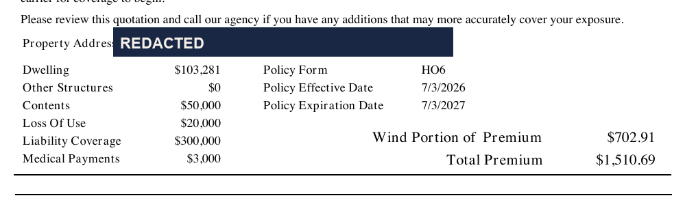
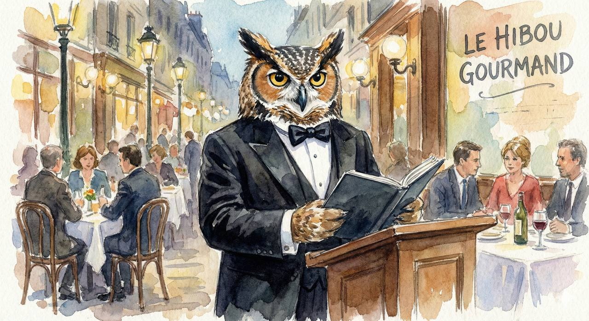
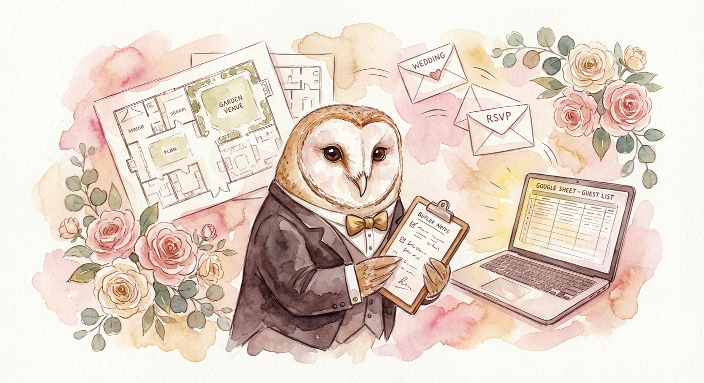

BOUND / $1,510.69 annual HO-6 SAVED / $724.02 per year
FIELD LOG / RECEIPTS
DINING / TRAVEL / SPORTS / WEDDING / PROJECTS
Real work. Real accounts. Persistent follow-through.



VERIFIED OUTCOME

BOUND / $1,510.69 annual HO-6 SAVED / $724.02 per year

SUBMITTED / proof delivered to the servicer
$1,810.63 to escrow
VERIFIED TRANSCRIPT / SOURCE CROP PENDING“ok we're squared away! the other shit was i guess the prorate. nice work!”